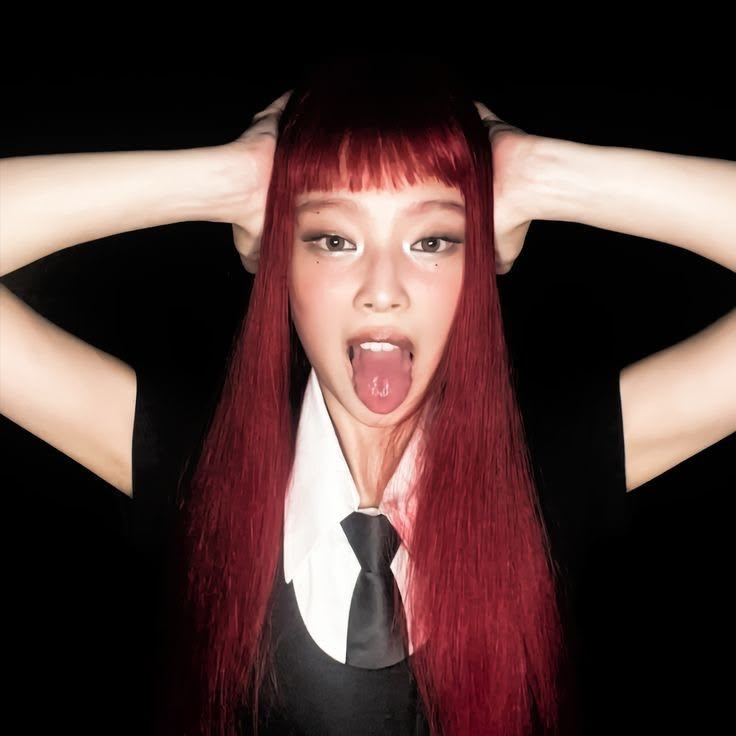

GROUP LOVE
BTS
Sete estrelas, uma só constelação. Purple you, sempre.
✦ DIGITAL DIARY / EST. 2026 ✦
um cantinho da internet feito de música, sentimentos, pixels e tudo aquilo que faz meu coração bater mais forte.
explorar meu universo ↘A PORTA ESTÁ ABERTA
Oi, você! ♡ Esse espaço é meu pequeno refúgio digital: um lugar para guardar músicas que parecem abraço, surtos de K-pop, inspirações, pensamentos aleatórios e, claro, muito amor pelo Jungkook.
Sinta-se em casa. Explore os cantinhos, escolha uma vibe e deixe uma mensagem no meu diário. A internet também pode ser um lugar fofinho.
Você não precisa florescer na mesma estação que todo mundo.
— take your time, darling.A HUMAN, NOT A ROBOT
Sou uma garota criativa que ama transformar gostos, memórias e pequenas obsessões em um universo só meu. Entre códigos, design e playlists, estou sempre criando alguma coisa.
NOW PLAYING (IN MY HEAD)
YOUR LITTLE SOUNDTRACK
Jung Kook · GOLDEN
Abra no Spotify ou carregue uma playlist abaixo ♡
Cole o link de uma playlist ou álbum público do Spotify:
O player oficial do Spotify permite ouvir prévias ou músicas completas conforme sua conta e as regras do Spotify. Não precisa compartilhar sua senha.
MY ULT COMFORT PERSON
Golden voice, golden heart, golden everything. Um cantinho dedicado ao artista que consegue transformar qualquer dia comum em um dia melhor.
“You shine brighter than anyone.”explorar vídeos oficiais ↗
Sete estrelas, uma só constelação. Purple you, sempre.

Elegância, atitude e uma energia impossível de ignorar.
LITTLE THINGS I WANT TO KEEP
Um mural de vibes, eras e memórias. Os quadrinhos abaixo são espaços decorativos: troque pelos seus edits, photocards, fotos e imagens favoritas quando quiser.
✦ DICA: para colocar suas imagens, substitua o elemento span.scrap-art por img no HTML e mantenha suas fotos dentro de uma pasta assets/.
SAME INTERNET, DIFFERENT CORNERS
Adicione seus próprios links para redes sociais, portfólio e comunidades. Os botões abaixo levam a páginas oficiais de música e comunidade por enquanto.
A NOTE TO MY FUTURE SELF
Escreva uma coisinha que você quer guardar. Ela fica salva neste navegador. Só sua, só sua vibe. ♡
FROM MY LITTLE ARCHIVE